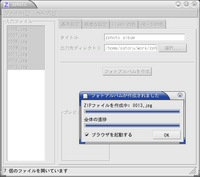

English | Japanese
最終更新日: 2004-07-21 (公開日: 2002-05-22)
zphoto は Flash ベースのフォトアルバムを作るツールです。 デジカメ写真から Flash を用いたフォトアルバム (オンラインアルバム) を簡単に作成できます。
zphoto をソースからビルドするには次のソフトウェアが必要です。 Windows 版はバイナリパッケージが用意され ているため、ビルドは不要です。
zphoto の GUI は wxWidgets と wxGlade を使って開発されています。GUI版をビルドするには wxWidgets が必要です。 Unix 系のプラットフォームでは wxzphoto というファイル名でビルドされます。
|
Windows XP の日本語ロカールでの動作画面。 wxWidgets 2.5.1 でビルド。 英語のロカールにも対応している。 |
|  | Debian GNU/Linux の日本語ロカールでの動作画面。 wxWidgets 2.5.1 と GTK+ 2.2.4 でビルド。 英語のロカールにも対応している。 |
写真ファイル ~/photos/*.jpg から「退屈な写真集」 という題の写真集を sample というディレクトリに作成する。 それぞれの写真は横幅を 800 ピクセルに調整し、ガンマ補 正 1.25 を適用してやや明るくする。
% zphoto -o sample --photo-width=800 --gamma 1.25 --title '退屈な写真集' ~/photos/*.jpg
標準では Flash のフォントには efont-serif の /usr/local/share/zphoto/fonts/EfontSerifB.fdb が、 HTML の雛形には /usr/local/share/zphoto/templates/en が用いられます。
zphoto --help を実行してください。
Unix 版の zphoto は起動時に ~/.zphotorc が存在すれば設定ファ イルとして読み込みます。 Windows版では zphoto.exe と同じディレクトリにある zphoto.txt が読み込まれます。 zphoto --config オプションで読み込む設定ファイルを指定するこ ともできます。
zphoto --dump-config を実行すると設定ファイルを生成できます。 次のように実行すると ~/.zphotorc を作成することができます。
% zphoto --dump-config > ~/.zphotorc
設定ファイルは次のようなテキストファイルです。
photo_width = 600 thumbnail_width = 320 html_thumbnail_width = 120 gamma = 1.000000 ...
--caption-file で指定するファイルには
foo.jpg <TAB> caption for foo bar.jpg <TAB> caption for bar
のように一行ごとにファイル名とキャプションを TAB 記号で区切って記述します。
MinGW でビルドしたバイナリです。Windows XP で動作確認をしています。 インストールは不要で zipファイルを展開すればすぐに使えます。 レジストリも変更しません。 ダウンロードから入手できます。
Windows 2000, XP 上では正常に動作するはずです。 Windows 98 では、アルバムの作成自体は成功するものの zphoto の終了時に「このプログラムは不正な処理を行ったので強 制終了されます」というエラーが発生するようです。
Windows 版はの zphoto.exe は GUI版です。
日本語のファイル名の画像を扱う場合は「高度な設定」タブの「通 し番号を出力ファイル名に使う」を使うことをお勧めします。この 設定は、zphoto が出力するファイルのファイル名を 000001.jpg のような連番にするオプションです。これにより、Web サーバにアッ プロードするときに発生しがちな「日本語のファイル名がおかしく なる」といった問題を回避することができます。
Windows 版では zip ファイルの作成にはまだ対応していません。
GNU Lesser General Public License に従ったフリーソフトウェアとして公開します。 完全に無保証です。
zphotoの話題は zphotoメーリングリストで扱っています。 下のようなメールを出すと参加できます。
Subject: 参加します To: zphoto-new@quickml.com Cc: satoru@namazu.org なんだかんだ。
{kind=link}